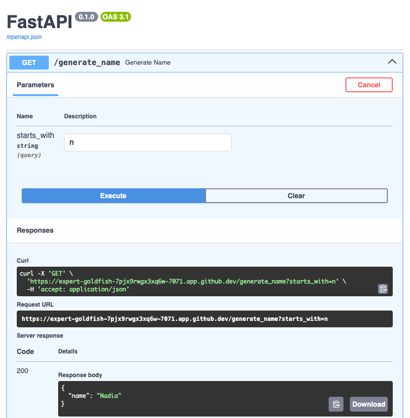
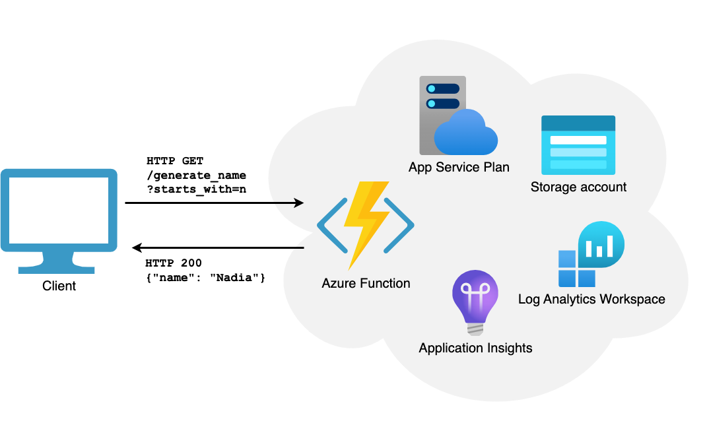
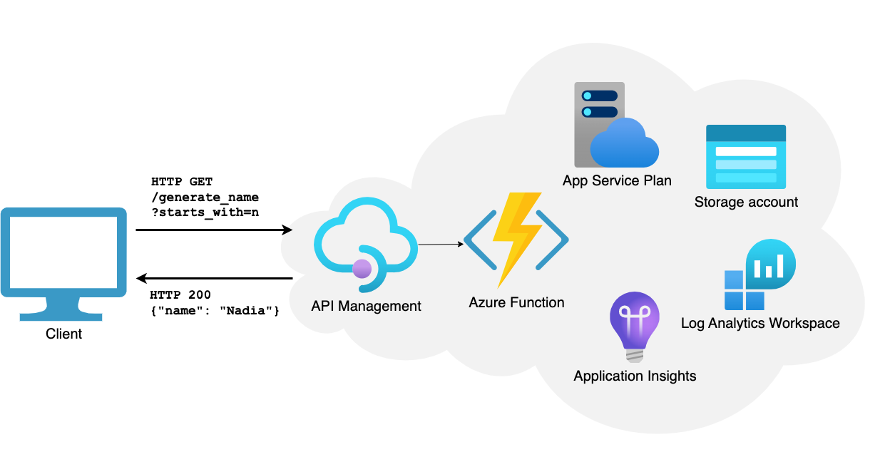
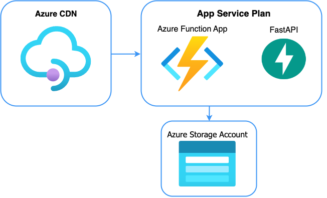

Python Web Apps:
FastAPI
aka.ms/python-web-apps-fastapi
Meet Pamela

Python Cloud Advocate at Microsoft
Formerly: UC Berkeley, Coursera, Khan Academy, Google
Find Pamela online at:
| Mastodon | @pamelafox@fosstodon.org |
| @pamelafox | |
| GitHub | www.github.com/pamelafox |
| Website | pamelafox.org |
Today's topics

- (Review) HTTP 101
- What are HTTP APIs?
- Making HTTP APIs with FastAPI
- Productionizing FastAPI
- Full-stack FastAPI
- FastAPI + AI
- Hosting HTTP APIs on Azure
Environment setup
To follow along with the live coding, your options are:
-
Online development with Codespaces:
- Local development with VS Code:
- Local development with any editor:
HTTP 101
HTTP (HyperText Transfer Protocol)
A client sends an HTTP request:
GET /index.html HTTP/1.1
Host: www.example.com
A server sends back an HTTP response:
HTTP/1.1 200 OK
Content-Type: text/html; charset=UTF-8
Content-Length: 208
<!DOCTYPE html>
<html>
<head>
<title>Example Domain</title>
</head>
<body>
<h1>Example Domain</h1>
<p>This domain is to be used for illustrative examples in documents.</p>
</body>
</html>
HTTP Status Codes
Commonly used codes:
| Code | Meaning |
|---|---|
| 200 | OK |
| 301 | Moved Permanently |
| 404 | Not Found |
| 500 | Server Error |
See more codes at HTTPcats.com or Wikipedia: HTTP status codes.
HTTP Request Methods
- GET: retrieve data from a server.
- POST: send data to a server.
- PUT: send data to a server, replacing existing data.
- PATCH: send data to a server, updating part of existing data.
- DELETE: delete data from a server.
HTTP APIs
API (Application Programming Interface)
A way for one program to talk to another program.
Example:
from weather import forecast
todays_forecast = forecast(94702)
The weather module's API includes a forecast function
that takes a zip code and returns a forecast.
HTTP API
Any API that uses HTTP as its communication protocol.
A client sends an HTTP request:
GET /weather?zip=94530 HTTP/1.1
Host: api.example.com
The server sends back an HTTP response:
HTTP/1.1 200 OK
Content-Type: text/json; charset=UTF-8
Content-Length: 30
{"temperature": 70, "wind": 5}
HTTP API response formats
- JSON
{"temperature": 70, "wind": 5} - XML (including RSS/ATOM)
<weather-response> <temperature>70</temperature> <wind>5</wind> </weather-response> - Image
HTTP APIs: GET vs. POST
GET: retrieve data from a server.
Often used with query parameters.
GET /weather?zip=94530 HTTP/1.1
Host: api.example.com
POST: send data to a server.
Data is often in JSON or form-encoded.
POST /scores HTTP/1.1
Host: api.example.com
player=pamela&score=50
Processing APIs in Python
Follow along in your local Python env or in this Codespace:
aka.ms/python-playgroundInstall urllib3 and make an HTTP request to an API:
pip install urllib3
import urllib3
resp = urllib3.request("GET",
"https://api.zippopotam.us/us/94530")
result = resp.json()
Exercise: Process more APIs
Using your local Python environment or this Codespace:
https://github.com/pamelafox/python-3.12-playground
aka.ms/python-playground
- Use pip to install
requestsorurllib3. - Make a Python file
- Make requests to the APIs below, customizing the URLs as suggested:
- Zippopotamus: Find out your latitude/longitude.
- Sunrise/Sunset: Try it for your latitude/longitude.
- Reddit: Try it with the Python subreddit or your favorite subreddit.
Tip: You can try them in the browser first to see the JSON response.
Popular APIs
Some examples:
- Social media: Twitter API, Facebook Graph API, Instagram API
- Productivity software: Google Workspace APIs, Microsoft Graph APIs
- Non-user data: Google Maps Geocoding API, Amazon Products API, The Movie DB API, OpenWeather API
🔑 Most of the popular APIs require you to sign up for a key so that they can track your usage and limit calls based on your payment level.
Internal APIs
An API can also be setup solely for use by the company that made it.
Many websites have a separate codebase for their frontend and backend, and all the communication happens over internal APIs.
Internal APIs should still be documented and easy to use.
Building an HTTP API
with FastAPI

FastAPI
FastAPI is a Python framework designed specifically for building HTTP APIs.
- Fast to build and fast to execute
- Relies on Python types (via Pydantic)
- Auto-generated documentation (via Swagger-UI)
- Based on the OpenAPI specification.
A simple API in FastAPI
👩🏼💻 Follow along with:
https://github.com/pamelafox/pyday-fastapi-starter
aka.ms/fastapi-starter
import random
import fastapi
app = fastapi.FastAPI()
@app.get("/generate_name")
async def generate_name():
names = ["Minnie", "Margaret", "Myrtle", "Noa", "Nadia"]
random_name = random.choice(names)
return {"name": random_name}
Running FastAPI locally
1. Put code in api/main.py
2. Install requirements
pip install fastapi
3. Run the server
fastapi dev api/main.py
4. Try the API and docs
http://127.0.0.1:8000/generate_name
http://127.0.0.1:8000/docs
Adding query parameters
import random
import fastapi
app = fastapi.FastAPI()
@app.get("/generate_name")
async def generate_name(max_len: int = None):
names = ["Minnie", "Margaret", "Myrtle", "Noa", "Nadia"]
if max_len:
names = [n for n in names if len(n) <= max_len]
random_name = random.choice(names)
return {"name": random_name}
FastAPI also supports passing parameters in path, cookies, headers, or body.
Returning errors in FastAPI
import random
import fastapi
app = fastapi.FastAPI()
@app.get("/generate_name")
async def generate_name(max_len:int = None):
names = ["Minnie", "Margaret", "Myrtle", "Noa", "Nadia"]
if max_len:
names = [n for n in names if len(n) <= max_len]
if len(names) == 0:
raise fastapi.HTTPException(status_code=404, detail="No name found")
random_name = random.choice(names)
return {"name": random_name}
Exercise: Make an API
Using this repo:
https://github.com/pamelafox/pyday-fastapi-starter
aka.ms/fastapi-starter
- Follow the readme steps to get the FastAPI app running.
- Add more names to the list.
- Add a new API parameter, like
ends_with,includes, orlength. - Add a new route to generate something else, like pet names.
Productionizing
FastAPI apps
Production-level app servers
For production, you'll need a server that can handle:
- handle ASGI (async) apps
- process multiple requests concurrently
Options:
Uvicorn
Uvicorn is a production-level server specifically for ASGI apps.
As of version 0.30.0, uvicorn can handle multiple workers.
Add uvicorn to requirements.txt:
fastapi
uvicorn[standard]
Use uvicorn to run FastAPI app:
uvicorn api.main:app --workers 4 --port 8000
Gunicorn
Gunicorn is a production-level server that can run multiple worker processes.
Add gunicorn to requirements.txt:
fastapi
uvicorn[standard]
gunicorn
Use gunicorn to run FastAPI app using Uvicorn worker:
python3 -m gunicorn api.main:app --workers 4 \
--worker-class uvicorn.workers.UvicornWorker --bind 0.0.0.0:8000
Configuring gunicorn
Gunicorn can be configured with a gunicorn.conf.py file
to adjust worker count based on CPU cores.
import multiprocessing
max_requests = 1000
max_requests_jitter = 50
log_file = "-"
bind = "0.0.0.0:8000"
worker_class = "uvicorn.workers.UvicornWorker"
workers = (multiprocessing.cpu_count() * 2) + 1
The run command can be simplified to:
python3 -m gunicorn main:app
Full-stack FastAPI

FastAPI + Jinja2
From this repo:
github.com/Azure-Samples/azure-fastapi-postgres-flexible-appservice
aka.ms/fastapi-postgres-app
app = FastAPI()
parent_path = pathlib.Path(__file__).parent.parent
app.mount("/mount", StaticFiles(directory=parent_path / "static"), name="static")
templates = Jinja2Templates(directory=parent_path / "templates")
@app.get("/", response_class=HTMLResponse)
def index(request: Request):
return templates.TemplateResponse("index.html", {"request": request})
@app.get("/about", response_class=HTMLResponse)
def about(request: Request):
return templates.TemplateResponse("about.html", {"request": request})
FastAPI + Database
From this repo:
github.com/Azure-Samples/azure-fastapi-postgres-flexible-appservice
aka.ms/fastapi-postgres-app
SQLModel is built specifically with FastAPI in mind:
# models.py
class Destination(SQLModel, table=True):
id: typing.Optional[int] = Field(default=None, primary_key=True)
name: str = Field(index=True)
description: typing.Optional[str]
cruises: typing.List["Cruise"] = Relationship(back_populates="destinations",
link_model=CruiseDestinationLink)
# app.py
@app.get("/destination/{pk}", response_class=HTMLResponse)
def destination_detail(request: Request, pk: int):
with Session(engine) as session:
destination = session.exec(select(Destination).where(Destination.id == pk)).first()
return templates.TemplateResponse(
"destination_detail.html", {"request": request, "destination": destination, "cruises": destination.cruises}
)
FastAPI + AI

FastAPI + scikit-learn
From this repo:
github.com/pamelafox/scikitlearn-model-to-fastapi-app
An API based on a sklearn regression model:
model = joblib.load(f"{os.path.dirname(os.path.realpath(__file__))}/model.pkl")
@app.get("/model_predict")
async def model_predict(
years_code: int,
years_code_pro: int,
ed_level: categories.EdLevel,
main_branch: categories.MainBranch,
country: categories.Country):
X_new = numpy.array([[years_code, years_code_pro, ed_level.value, main_branch.value, country.value]])
result = model.predict(X_new)
return {"prediction": result[0]}
FastAPI + OpenAI
From this repo:
github.com/Azure-Samples/openai-chat-backend-fastapi
aka.ms/fastapi-openai
@router.post("/chat/stream")
async def chat_stream_handler(chat_request: ChatRequest) -> fastapi.responses.StreamingResponse:
async def response_stream():
chat_coroutine = clients["openai"].chat.completions.create(
model=os.getenv("AZURE_OPENAI_CHATGPT_DEPLOYMENT", "chatgpt"),
messages=[{"role": "system", "content": SYSTEM_PROMPT}] + chat_request.messages,
stream=True,
)
async for event in await chat_coroutine:
if event.choices:
first_choice = event.model_dump()["choices"][0]
yield json.dumps({"delta": first_choice["delta"]}, ensure_ascii=False) + "\n"
return fastapi.responses.StreamingResponse(response_stream())
API request/response conforms to Microsoft AI Chat Protocol.
FastAPI + Postgres + OpenAI
From this repo:
github.com/Azure-Samples/rag-postgres-openai-python
aka.ms/rag-postgres
@router.post("/chat")
async def chat_handler(chat_request: ChatRequest):
messages = [message.model_dump() for message in chat_request.messages]
searcher = PostgresSearcher(
engine,
openai_embed_client=openai_embed_client,
embed_deployment=openai_embed_deployment,
embed_model=openai_embed_model,
)
ragchat = AdvancedRAGChat(
searcher=searcher,
openai_chat_client=openai_chat_client,
chat_model=openai_chat_model,
chat_deployment=openai_chat_deployment,
)
return (await ragchat.run(messages))
Hosting FastAPI
...on Azure!

Hosting considerations
- How much traffic do you expect?
- How variable will the traffic be?
- Do you need scale-to-zero?
- What's your budget?
- Is it public facing?
- How will you manage API use?
Azure hosting options
| Cloud | Azure | |||
|---|---|---|---|---|
| Environment | Containers | PaaS | ||
| Azure Kubernetes Service | Container Management | Azure App Service | Serverless | |
| Azure Container Apps | Azure Functions | |||
None of the platforms natively "know" about FastAPI, but they can all run Python apps.
For today, we'll try
Functions.
Hosting a FastAPI on Azure Functions

Local emulation of FastAPI on Azure Functions
Using this repo:
github.com/Azure-Samples/fastapi-on-azure-functions
aka.ms/fastapi-azure-functions
- Wait for the Python virtual environment in .venv to be fully activated
- Install the requirements:
python -m pip install -r requirements.txt - Use "Run & Debug" from VS Code or run the command:
func host start
Deploying a FastAPI to Azure Functions
Using this repo:
github.com/Azure-Samples/fastapi-on-azure-functions
aka.ms/fastapi-azure-functions
- Sign up for a free Azure account and create a subscription.
- If not in Codespace, install the Azure Developer CLI
- Login to your Azure account:
azd auth login - Deploy the app:
azd up
What's the hosted API missing?
- CORS handling
- Subscription keys
- Quotas/Rate limiting
- IP blocking
- Caching
Azure API Management
An Azure API Management Policy provides all the additional features of a public API.

Deploying FastAPI to Functions + APIM
Using this repo:
github.com/pamelafox/fastapi-azure-function-apim
aka.ms/fastapi-functions-apim
- Sign up for a free Azure account and create a subscription.
- If not in Codespace, install the Azure Developer CLI
- Login to your Azure account:
azd auth login - Deploy the app:
azd up - Once you've verified the API is working, take it down:
azd down
Adding Azure CDN
Azure CDN provides a global network of servers to cache API responses.
Deploying FastAPI to Functions + Azure CDN
Using this repo:
github.com/pamelafox/staticmaps-function
aka.ms/fastapi-functions-cdn
- Sign up for a free Azure account and create a subscription.
- If not in Codespace, install the Azure Developer CLI
- Login to your Azure account:
azd auth login - Deploy the app:
azd up - Once you've verified the API is working, take it down:
azd down
Any questions?